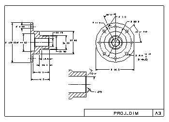

Estimated time to complete: 30–45 minutes

In this project, you will practice adding various types of dimensions to views. You will:
Create two types of diameter dimensions.
Create two types of radius dimensions.
Create cylindrical dimensions with different precisions.
Create angular dimensions.
Add tolerancing and appended text to a diameter dimension.
Create vertical dimensions.
Create a parallel dimension.
Create a chamfer dimension.
Launch the Add dimensions activity.